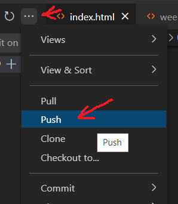

Documentation
I started the website building process by following the instructions laid out for us on the course website. Downloading Visual Studio & GitBash, and making a GitHub account. After doing these steps, the first thing to do was clone my site's repository from GitHub. Cloning is the process of downlaoding a copy of the source code for your website to a folder on your computer, so you can edit it into a proper webpage.
We are using HTML CSS to code our websites in class, HTML being the standard code language used by web browsers to structure pages, and CSS being a language used specifically for styling the visual components of a website. We're also using git, which is a program for managing said source code.
Using Visual Studio Code to edit code, pushing & pulling is the method of uploading said changes to your active webpage. This is done by 1. staging the changes by hitting the plus button, 2. Clicking the check mark to commit said changes, leaving a comment that will note the purpose of the change in the repository. And 3. click the 3 dots, the hit push to send the changes to the website.
After cleaning up the template, I added some images to it and started making different pages for the weekly projects. I made one page for each and equiped them all with the navbar on the top that goes back to the project and about me sections on the homepage, though all the week beside this one remained blank from this point onward due to lack of content.


From here, most of the harder coding stuff was finished, and all that remained was to write out the documentation and about me sections. This primarily consisted of putting these images in place, and the aforementioned writing. I had some trouble with the about me section, as the navbar button would not go to it properly, but I fixed it by inspecting the code in Chrome with Tuna's help.
After fixing this issue, I added the final pictures to the homepage, finished up my about me section, and I was all done! (After going back to explain the other stuff on the rubric) Even though it wasn't what I expected coming into the course, building this website was still kinda fun, and it's definetly a neat skill to have for the future.